Project 4: Image Warping and Mosaicing
A.1
Here are the images I’ve shot. All of them are projective transforms, so I fixed my center of projection and only rotated the camera.
The first set of images are from a sunset at Salt Point State Park.
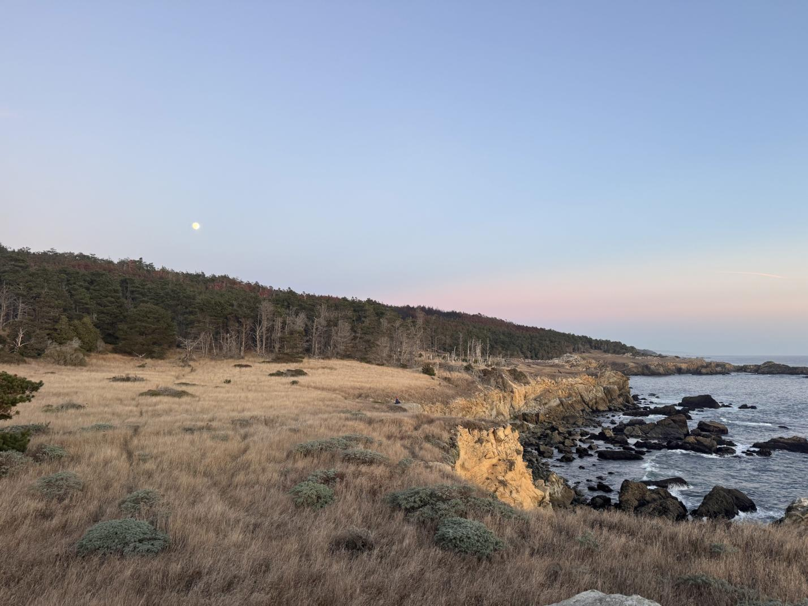
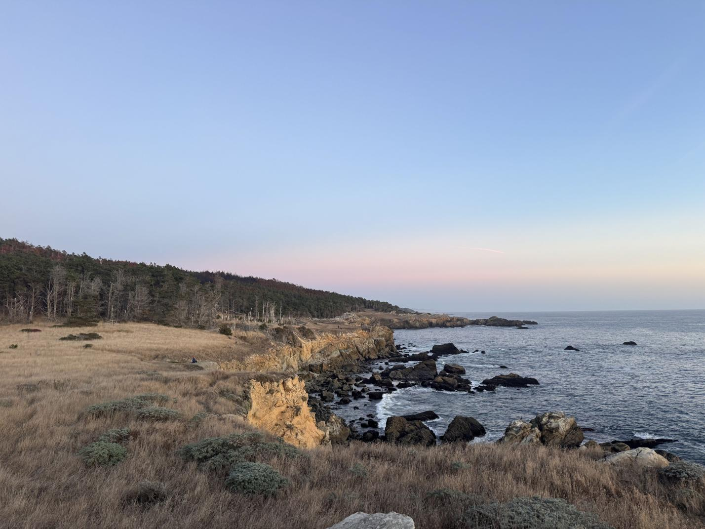
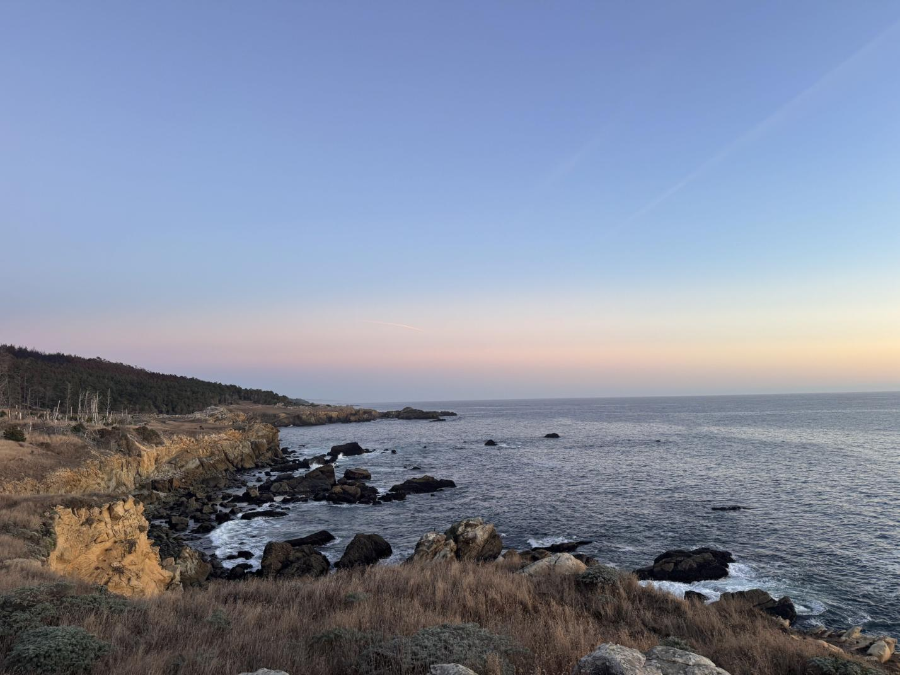
The second set of images are from a building on campus.
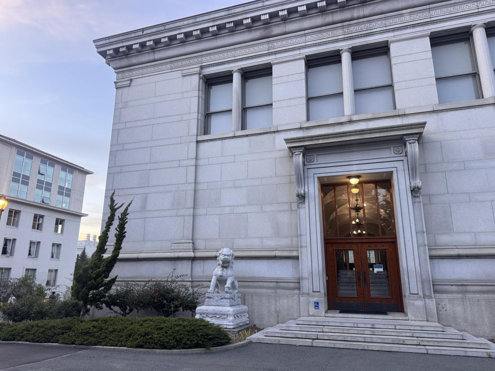
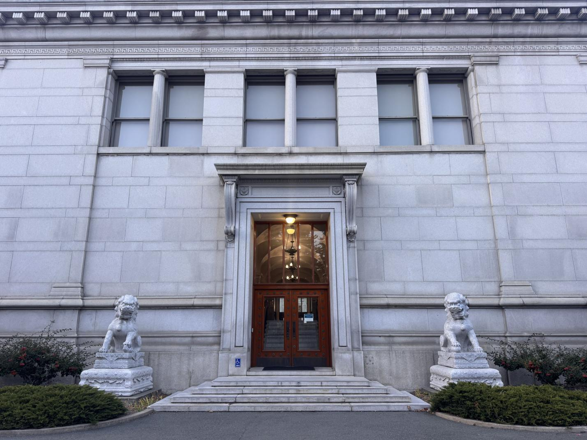
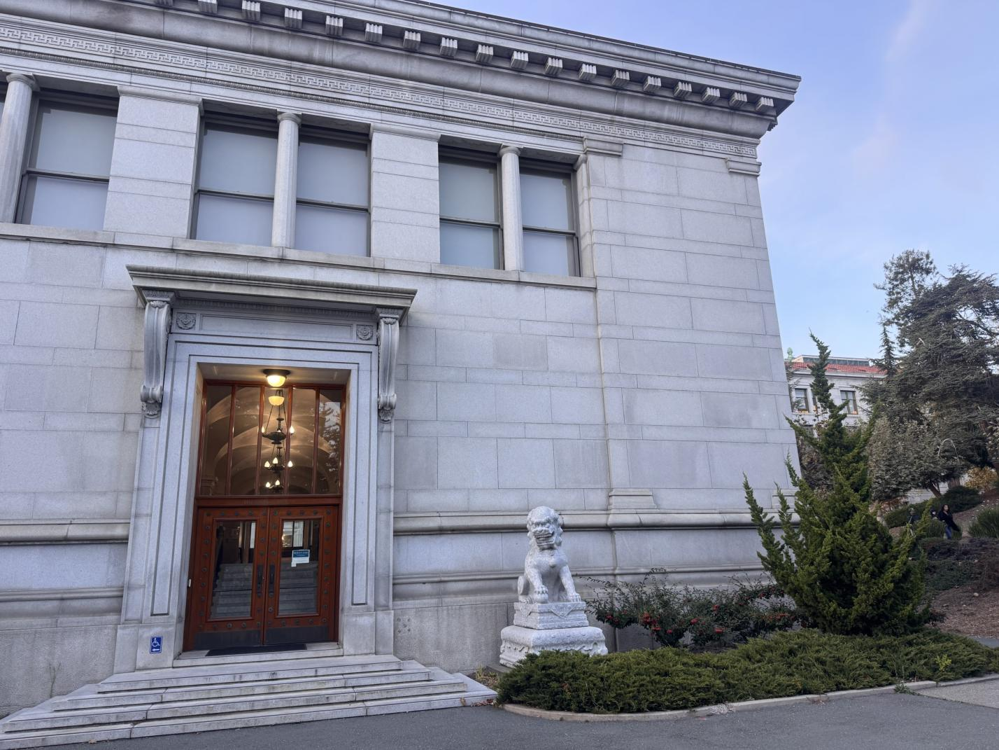
The third set of images were taken in the basement of Gateway.
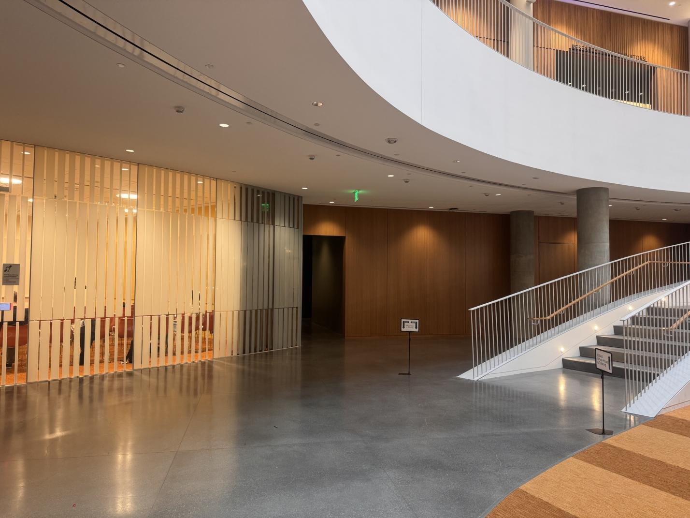
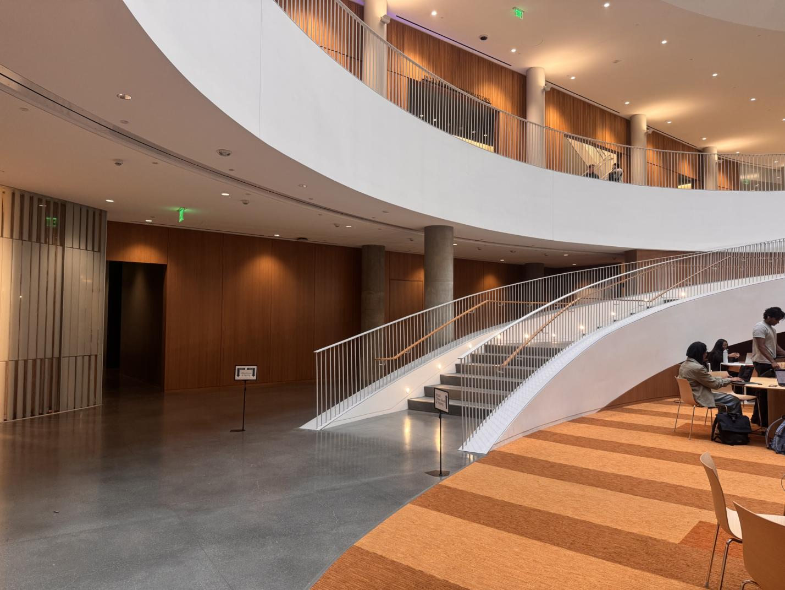
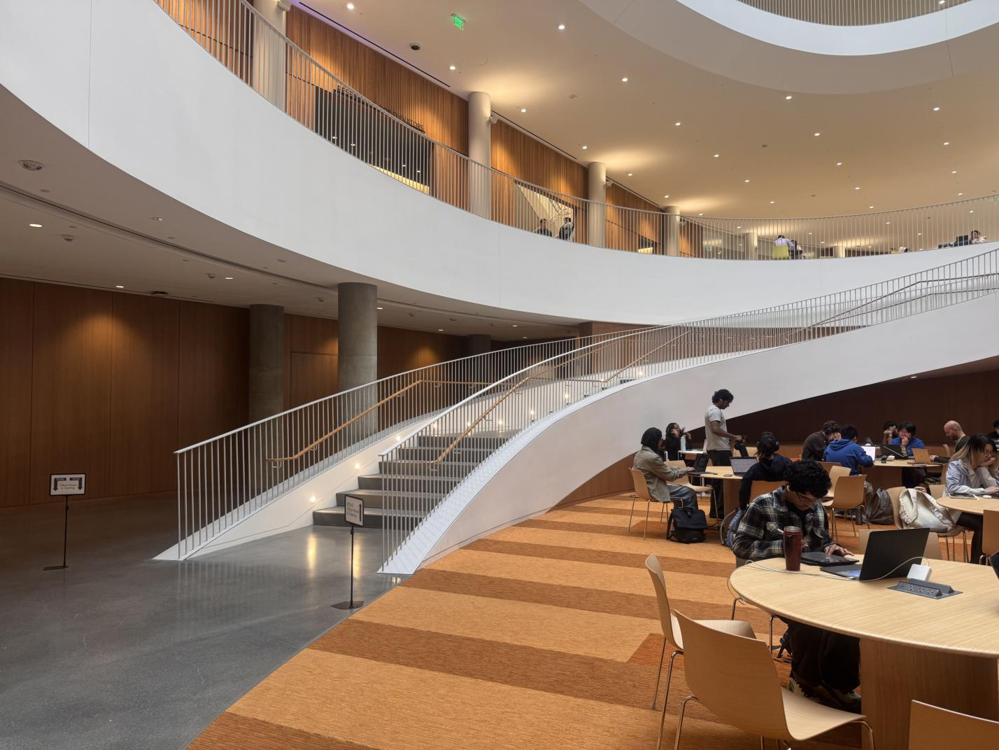
A.2
Here’s my implementation of the system of equations.
def compute_H(im1_pts, im2_pts):
A = []
b = []
for (x1, y1), (x2, y2) in zip(im1_pts, im2_pts):
A.append([x1, y1, 1, 0, 0, 0, -1*x1*x2, -1*y1*x2])
A.append([0, 0, 0, x1, y1, 1, -1*x1*y2, -1*y1*y2])
b.append(x2)
b.append(y2)
A = np.array(A)
b = np.array(b)
x, residuals, rank, s = np.linalg.lstsq(A, b, rcond=None)
H = np.append(x, 1).reshape(3, 3)
print("H matrix", H)
return HEssentially, we want to compute the eight degrees of freedom in matrix
In equation form, we have p′ = Hp, where p′ = [wx′ wy′ w] (column vector) and p = [x y 1] (column vector), since both p′ and p are in homogenous coordinates.
Thus we have
If we divide both sides by w, we get wx′/w = x′ = (ax+by+c)/(gx+hy+1). If we multiply both sides by gx+hy+1 and isolate x′, we have
Thus if we set this up as a least-squares regression problem where we need to solve for eight-dimensional vector h = [a b c d e f g h] (column vector), we want to add the row [x y 1 0 0 0 −x′x −x′y] to design matrix A with target [x′].
We can parallel this setup for y′, and we will get y′ = dx + ey + f − gxy′ − hyy′ with target [y′].
Thus for each point we get two equations. We only need 4 systems of equations to recover a matrix, but we choose to use least-squares and solve an overdetermined system to recover a better estimate, as clicking points can be prone to noise.
For all three panoramas, we want to project onto the middle reference image. Thus we compute compute_H(left, ref) and compute_H(right, ref) such that H tells us how to map the coordinates of some image to the reference.
Thus for these correspondence images, the right image corresponds to the reference image, and the left image corresponds to either the left/right image that we are mapping coordinates onto the reference for.
Cliff
I used 10 correspondence points for each pair.
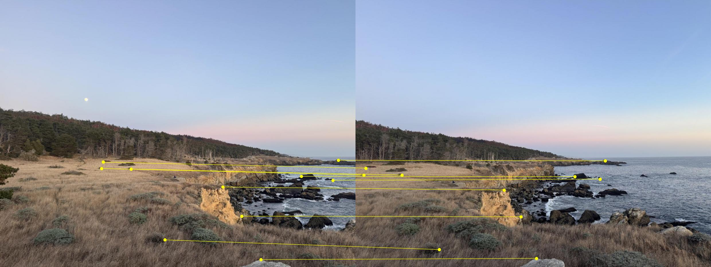
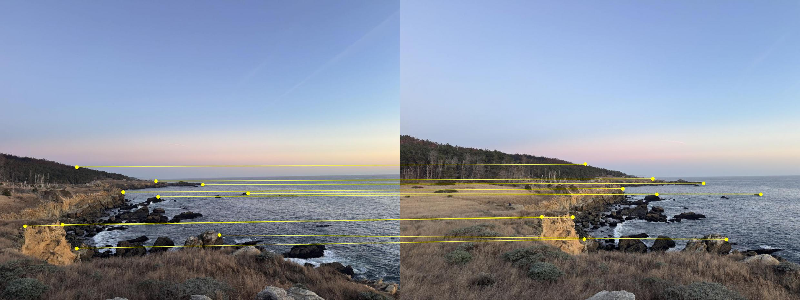
Building
I used 22 correspondence points for the left pair and 19 for the right pair.
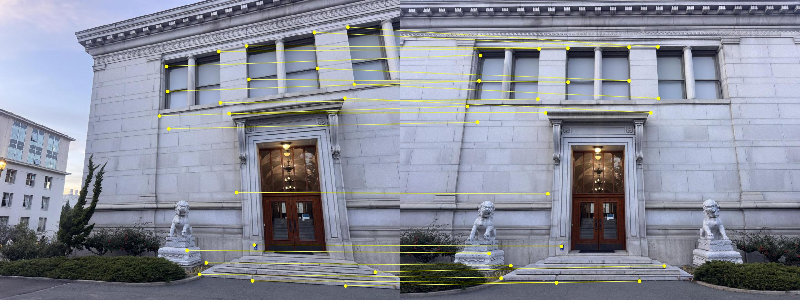
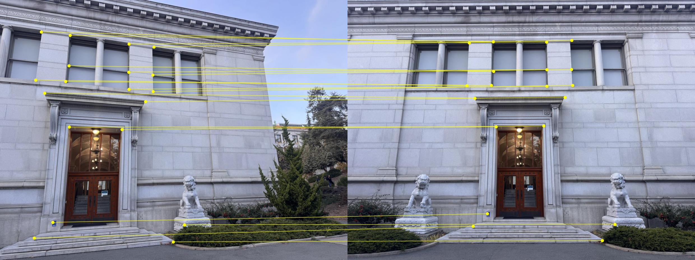
Gateway
I used 18 correspondence points for the left pair and 15 for the right pair.
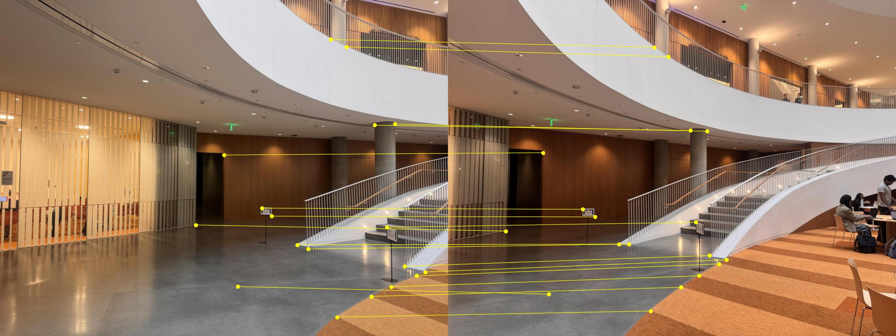
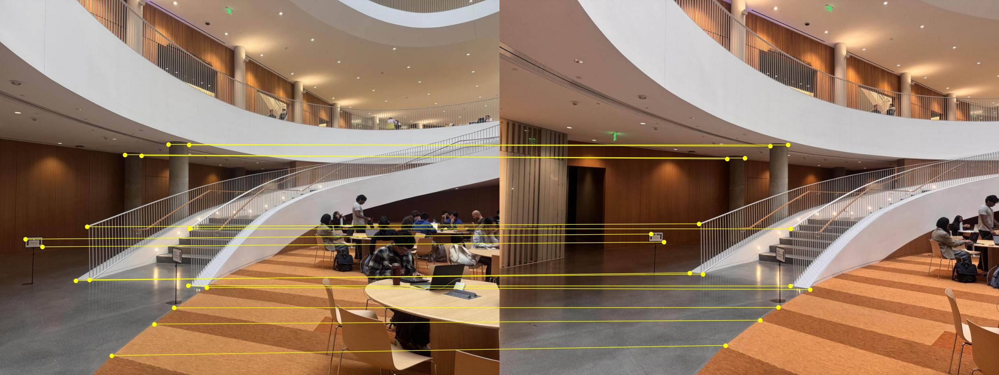
A.3
We now need to do our interpolation. We have two methods available to us; nearest neighbors and bilinear.
In both cases, we warp some image using inverse warping. Thus, first, we recover the boundary points of the original image; we pass it through H to then find the boundary points in this new warped space. These new points may be negative, but we need to visualize them in numpy arrays (with nonnegative indices), and thus we create a new output array for the warped images that matches the dimensions of the new warped image. We go from the floor of the lowest x-coordinate of the boundary points to the ceiling of the highest; and do a similar procedure for y.
With this shape, we can now figure out each of the specific coordinates in this new “warped space.” For each of these coordinates, we conduct an inverse warp, so we map them back to their corresponding pixel in the input image. We do so by simply multiplying each point by the inverse of H.
These points don’t necessarily have to be integers. In nearest neighbors, we map to the nearest integer point; if, instead, we land outside of the input image, we simply set the pixels for all channels at that point to 0, and update our corresponding alpha array as 0, to indicate that we couldn’t fill in a value for this pixel. These alphas will come in handy later!
In bilinear interpolation, we take an average of the four closest points, weighted by how close our decimal point maps to each one. This can be done by linearly interpolating the top two points, and separately, the bottom two points, and then interpolating the two resulting ones together. This reduces to nearest neighbors if we map to an integer point, as we will give the three other “closest” points a weight of 0. We consider (0, 0) to be the center of the first pixel for ease.
We rectify two images with both interpolation methods: a picture of my laptop case on a table in Gateway (guess where I did this project? 😭) and a painting from a cafe on Solano Avenue.
Both objects are rectangles, so I click the points in the image and define my own bounding box by specifying a rectangular height and width.
Here are results for both.
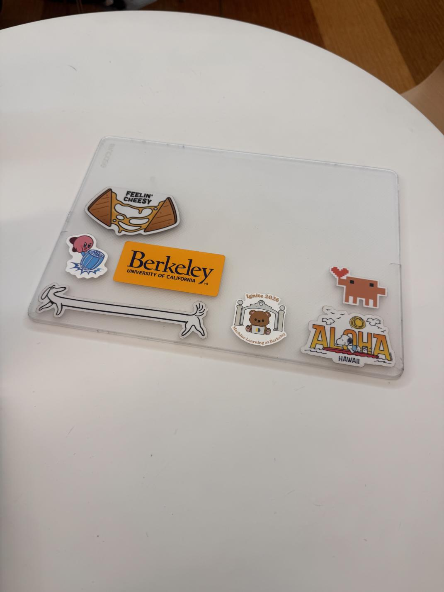
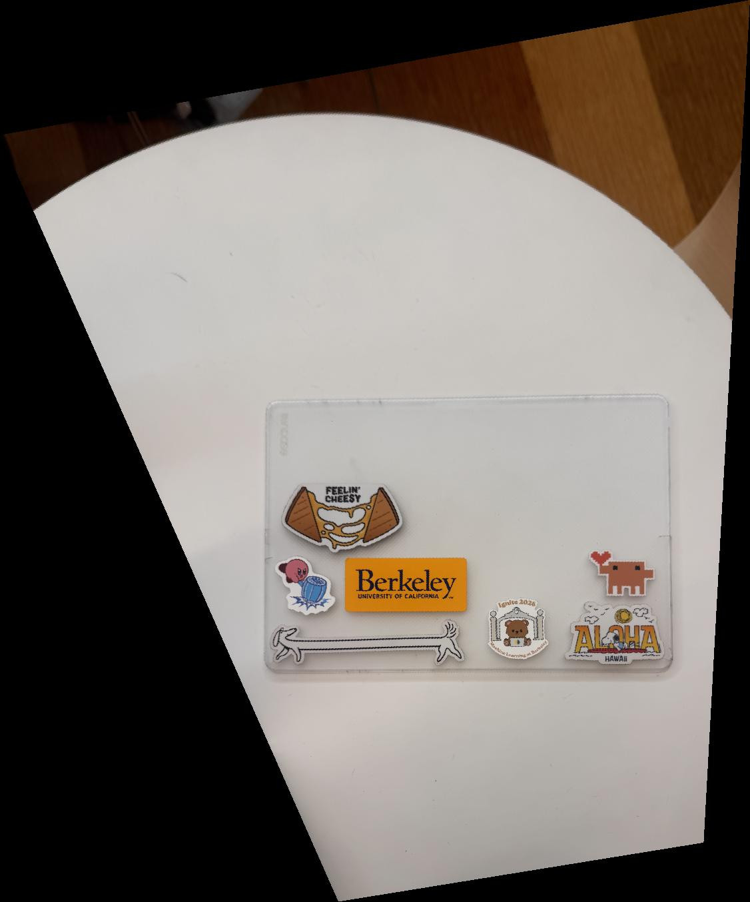
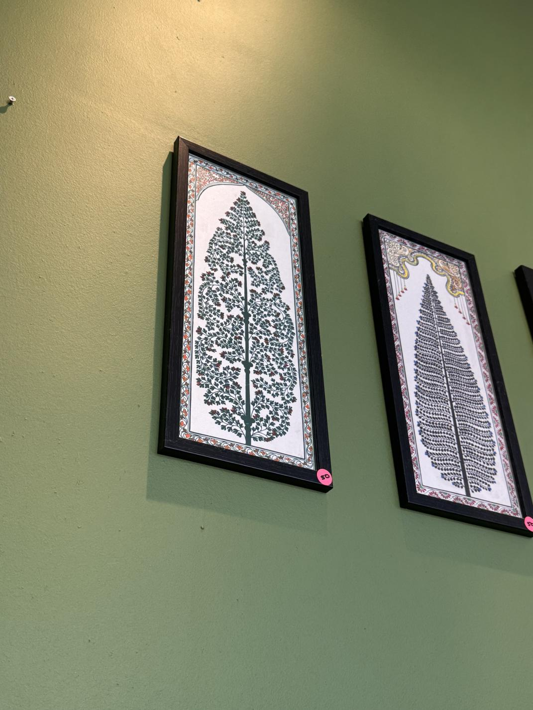
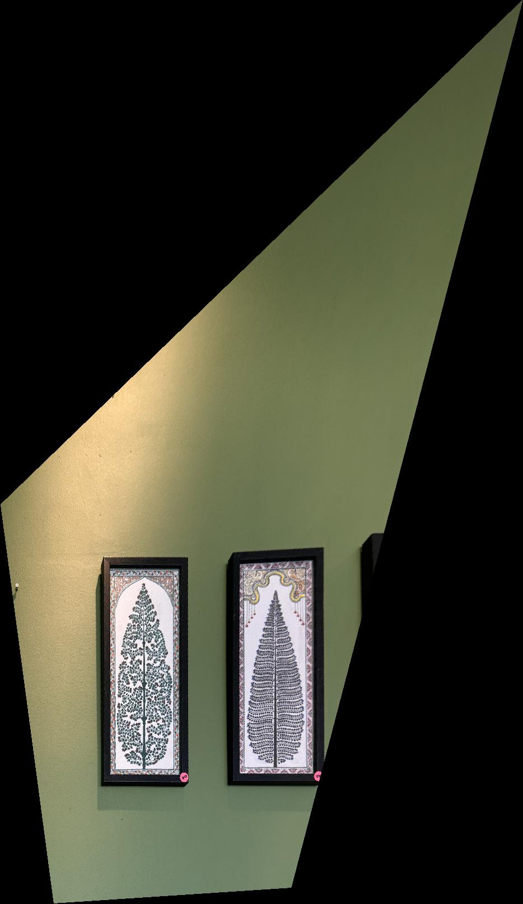
Bilinear is considerably slower than nearest neighbors, because we are now looking at four different points in the input image per output pixel rather than just one. This should theoretically lead to better quality outputs, which is hard to visualize at this scale; but if you look very closely (particularly at the laptop cover and the painting frames), you can see that nearest neighbors is a little bit more grainy (and aliases a little bit more), while the bilinear interpolation is a lot cleaner at those edges.
Implementations of the functions below.
def warpImageNearestNeighbor(im, H):
# define boundary points for original image
boundaries = np.array([[0, 0, im.shape[1]-1, im.shape[1]-1],
[0, im.shape[0]-1, 0, im.shape[0]-1],
[1, 1, 1, 1],])
# find corresponding output boundaries in homogenous coords
output_boundaries = H @ boundaries
x_y_output = output_boundaries[:2] / output_boundaries[2]
# find max and min x
x_min, x_max = x_y_output[0].min(), x_y_output[0].max()
y_min, y_max = x_y_output[1].min(), x_y_output[1].max()
# get the discrete coordinates that match x_min and x_max, put them in a matrix
Xs, Ys = np.meshgrid(np.arange(floor(x_min), ceil(x_max) + 1), np.arange(floor(y_min), ceil(y_max) + 1))
all_points = np.stack([Xs.flatten(), Ys.flatten(), np.ones_like(Xs).flatten()])
# get the corresponding points in the input image
transformed_points = np.linalg.inv(H) @ all_points
# create empty array for output image
output_image = np.zeros((ceil(y_max) - floor(y_min) + 1, ceil(x_max) - floor(x_min) + 1, im.shape[2]))
output_alpha_mask = np.zeros((ceil(y_max) - floor(y_min) + 1, ceil(x_max) - floor(x_min) + 1))
# iterate through all sets of points
# vectorized implementation
wx, wy, w = transformed_points[0], transformed_points[1], transformed_points[2]
x, y = all_points[0], all_points[1]
x_input = np.round(wx / w).astype(int)
y_input = np.round(wy / w).astype(int)
valid_mask = (x_input >= 0) & (y_input >= 0) & (y_input < im.shape[0]) & (x_input < im.shape[1])
output_alpha_mask[(y - floor(y_min))[valid_mask], (x - floor(x_min))[valid_mask]] = 1
output_image[(y - floor(y_min))[valid_mask], (x - floor(x_min))[valid_mask], :] = im[y_input[valid_mask], x_input[valid_mask], :]
return output_image, output_alpha_mask, floor(x_min), floor(y_min)def warpImageBilinear(im, H):
# define boundary points for original image
boundaries = np.array([[0, 0, im.shape[1]-1, im.shape[1]-1],
[0, im.shape[0]-1, 0, im.shape[0]-1],
[1, 1, 1, 1],])
# find corresponding output boundaries in homogenous coords
output_boundaries = H @ boundaries
x_y_output = output_boundaries[:2] / output_boundaries[2]
# find max and min x
x_min, x_max = x_y_output[0].min(), x_y_output[0].max()
y_min, y_max = x_y_output[1].min(), x_y_output[1].max()
# get the discrete coordinates that match x_min and x_max, put them in a matrix
Xs, Ys = np.meshgrid(np.arange(floor(x_min), ceil(x_max) + 1), np.arange(floor(y_min), ceil(y_max) + 1))
all_points = np.stack([Xs.flatten(), Ys.flatten(), np.ones_like(Xs).flatten()])
# get the corresponding points in the input image
transformed_points = np.linalg.inv(H) @ all_points
# create empty array for output image
output_image = np.zeros((ceil(y_max) - floor(y_min) + 1, ceil(x_max) - floor(x_min) + 1, im.shape[2]))
output_alpha_mask = np.zeros((ceil(y_max) - floor(y_min) + 1, ceil(x_max) - floor(x_min) + 1))
# vectorized implementation
wx, wy, w = transformed_points[0], transformed_points[1], transformed_points[2]
x, y = all_points[0], all_points[1]
x_input = wx / w
y_input = wy / w
valid_mask = (x_input >= 0) & (y_input >= 0) & (y_input < im.shape[0]) & (x_input < im.shape[1])
x0 = np.floor(x_input).astype(int)[valid_mask]
x1 = np.clip(np.floor(x_input).astype(int) + 1, 0, im.shape[1]-1)[valid_mask]
y0 = np.floor(y_input).astype(int)[valid_mask]
y1 = np.clip(np.floor(y_input).astype(int) + 1, 0, im.shape[0]-1)[valid_mask]
dx = (x_input - np.floor(x_input).astype(int))[valid_mask][:, np.newaxis]
dy = (y_input - np.floor(y_input).astype(int))[valid_mask][:, np.newaxis]
top = im[y0, x0] * (1-dx) + im[y0, x1] * dx
bottom = im[y1, x0] * (1-dx) + im[y1, x1] * dx
interpolated = top * (1-dy) + bottom * dy
output_alpha_mask[(y - floor(y_min))[valid_mask], (x - floor(x_min))[valid_mask]] = 1
output_image[(y - floor(y_min))[valid_mask], (x - floor(x_min))[valid_mask], :] = interpolated
return output_image, output_alpha_mask, floor(x_min), floor(y_min)A.4
To blend the images into a mosaic, first we warp the left and right reference images, per the description in A2. We take the shifts from the warped left and right images, as well as the dimensions of the reference image, to find the minimum and maximum shift—with the goal of projecting all three images onto a shared canvas. With the minimum and maximum shift, we’re able to figure out the size of our canvas. Then we plot each image to their respective place on the canvas, based on the minimum and maximum shift values we derived.
Naively, the alpha mask is just 1 where we were able to interpolate a pixel, and 0 everywhere else. So when figuring out what value to put at a specific pixel, we can take a weighted average of our alpha mask values for the left, reference, and right images with the pixel value. As a walkthrough, if all alphas are 0, our pixel is just 0. If only one image has alpha = 1, then the pixel value comes from that image. If all images have alpha = 1, we take a uniform average of all the pixel values. (Note this is done for all channels, but the code is vectorized).
This approach leads to clear seams on our panoramas.
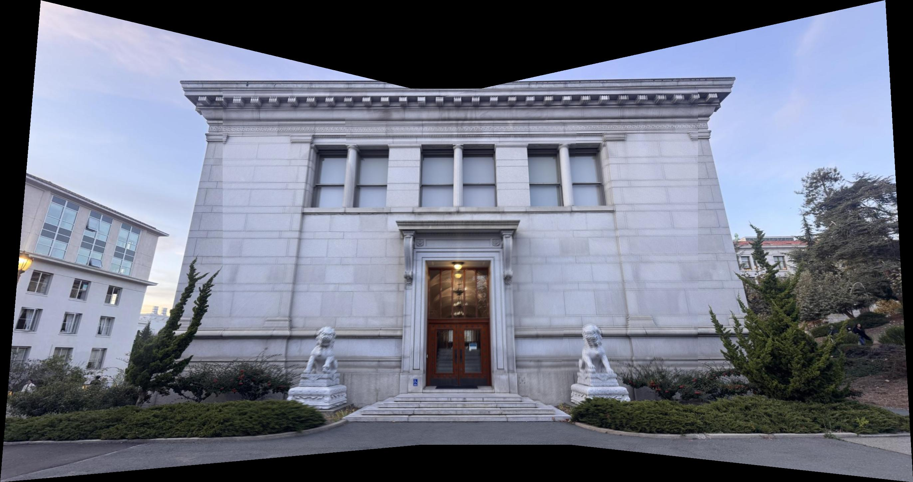
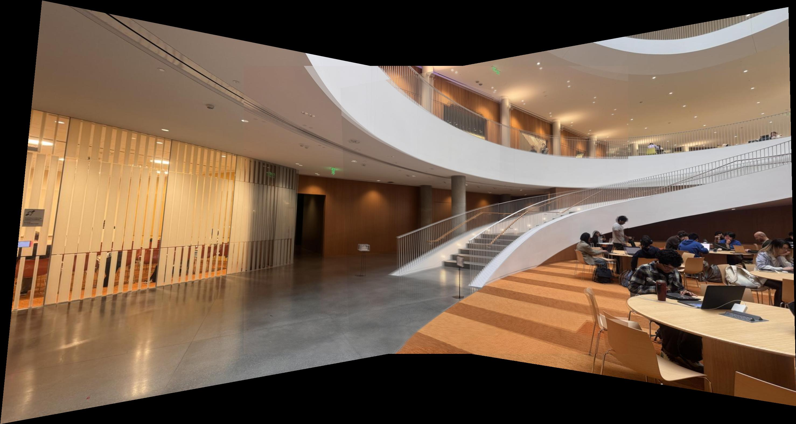
To reduce these edge artifacts, we use the distance transform bwdist, implemented in Python with scipy’s distance_transform_edt. We pad the naive alpha matrix to introduce an edge of 0s around the entire image, and then the distance transform looks at the Euclidean distance to the closest 0, so images near the center get higher alphas, and images near the edge get lower alphas. We can then do the same weighted average with these more sophisticated alpha masks.
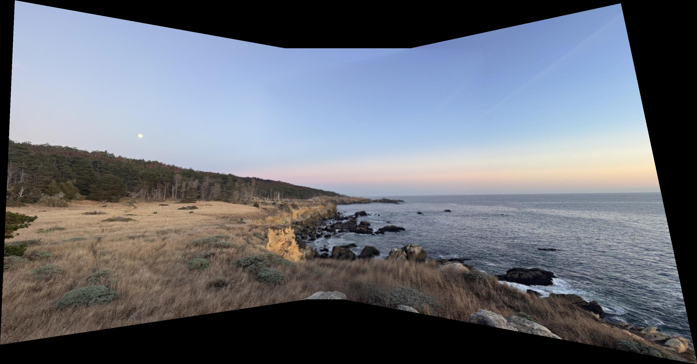
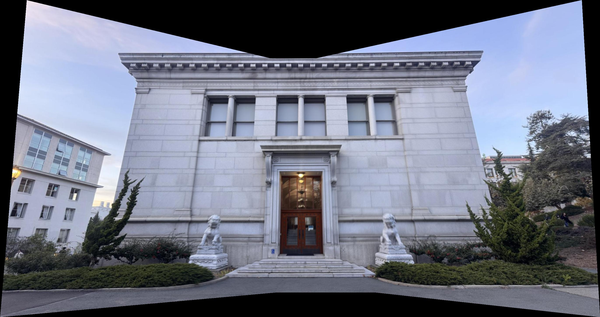
This is better, as the edge artifacts have largely disappeared. However, we’re seeing a lot of ghosting of high-frequency terms; you can see how blurry the building warp is near the door, and the cliffs/ocean near the rocks.
To mitigate this, we separate the frequencies. It’s not quite a Laplacian pyramid, as we’re not doing any downsizing, but we do use Laplacian blending techniques. We do a Gaussian blur over each warped image to extract the low frequencies, and subtract from the original image to get the high frequencies. We combine the low frequencies with the distance_transform_edt alpha mask. For the high frequencies, we do not want to blend them; rather we want to choose one image per pixel to retain them from. So we find the largest alpha across the left, reference, and right masks, and only keep the high-frequency information for the image corresponding to that largest alpha (essentially an argmax). This is much better; you can see the high-frequency detail return to the door of the building, the rocks in the ocean, and the staircase of the Gateway.
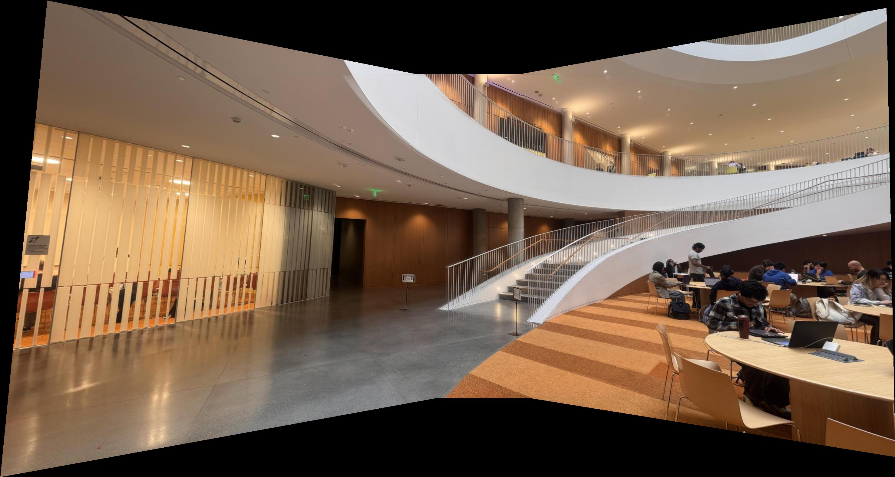